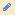

Display mode: In the default view of the RSS Bookmarks Portlet, the RSS feeds are displayed individually. In order to view an RSS feed, following the following steps:
- Select an RSS feed from the titles available in the 'Select RSS Feed' list box
- Click on the 'Display' button
- Clicking on any link in the displayed RSS feed will open a new browser window to that link. This window will operate outside the Portal.
- To add or delete an RSS feed, click on the 'Edit Preferences' icon -  at the top right hand corner of the portlet. This will take you to the 'Edit mode' of the RSS Bookmarks portlet.
|